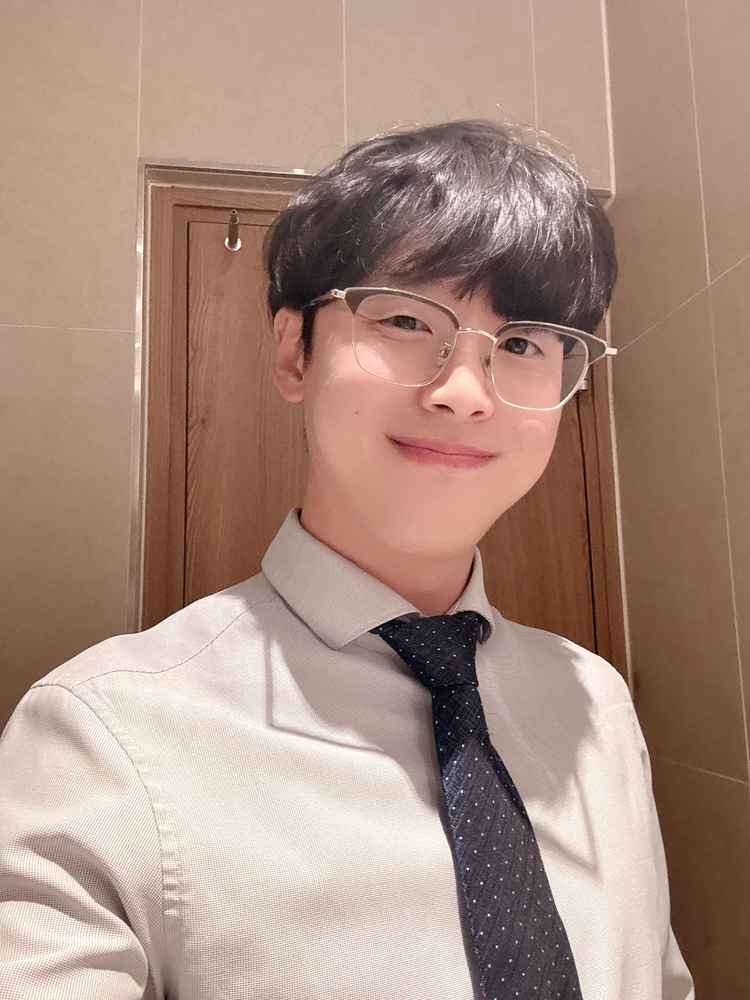

June 30, 2025 · Official Press Release
Dreamers Inc, a global tech consulting and R&D company founded in Los Angeles in 2006, has officially announced the launch of its blockchain security development initiative through its Korean branch, led by CEO KyongTae Cho. This project aims to strengthen security infrastructure across the next-generation digital asset ecosystem.
Notably, Dreamers Inc Korea has been selected as a key technical partner for the South Korean government’s national initiative involving KRW-based stablecoins and the reinforcement of cryptocurrency infrastructure. As a result, Dreamers Inc is expected to play a pivotal role in the establishment of a national Web3 infrastructure. The project will contribute to the security validation and standardization of blockchain-based payment systems under government leadership, offering a substantial impact on the development of the domestic digital asset industry.
CEO KyongTae Cho stated, “With Dreamers Inc’s global cybersecurity expertise and technological foundation, we aim to provide a reliable infrastructure for the Web3 ecosystem. Our public and private sector partnerships will help elevate Korea’s national security standards.”
Dreamers Inc Korea Public Relations Team
📧 press@thedreamers.io
🌐 www.thedreamers.io